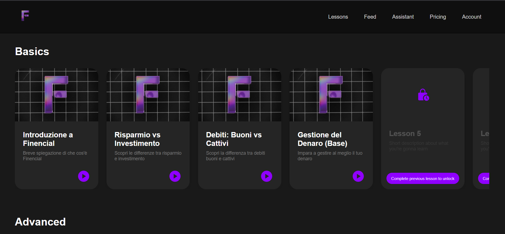
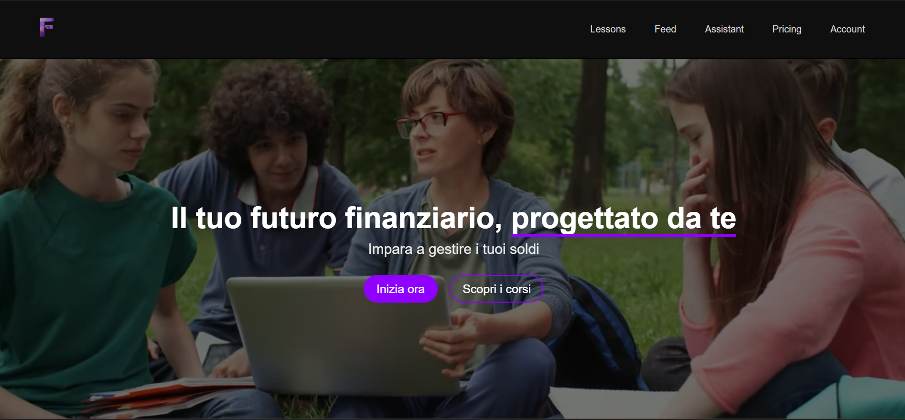
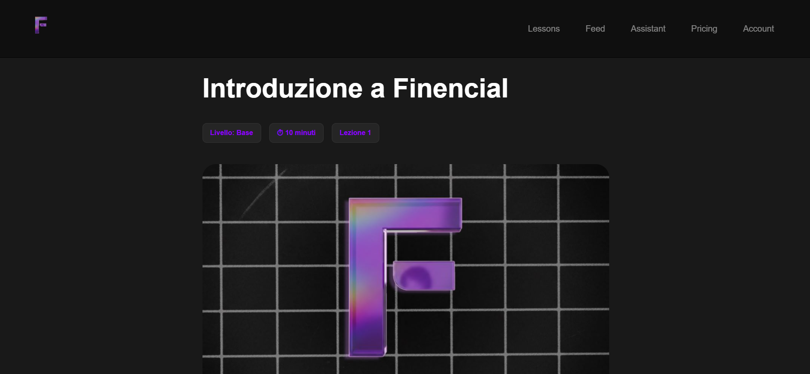
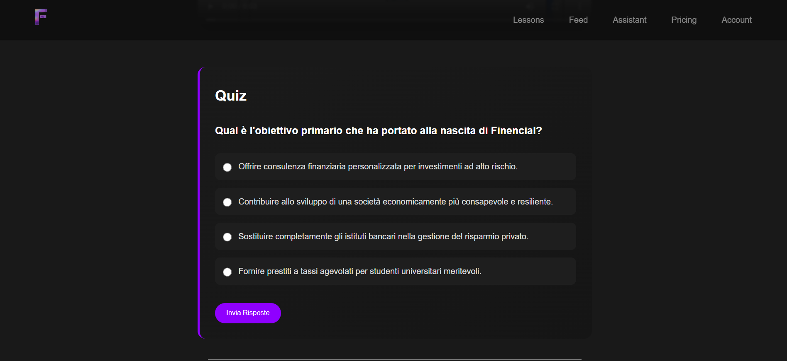

Finencial
Piattaforma Web per l'Educazione Finanziaria

L'idea
In Italia solo il 37% della popolazione ha competenze finanziarie di base. Non è un dato astratto — è la normalità per la maggior parte delle persone che crescono senza mai sentir parlare di risparmio, investimenti o valore del tempo.
Finencial nasce da questa consapevolezza. Non una piattaforma che insegna solo a investire,
come fanno già molte altre, ma un percorso completo: dalla gestione quotidiana del denaro
al risparmio, fino a capire quanto vale davvero il proprio tempo.
Tutto in lezioni brevi, dirette, senza fronzoli.
Il nome lo dice già: Finencial è la fusione di fine e financial.
Il problema che volevamo risolvere
In Italia l'educazione finanziaria non viene insegnata a scuola. Il risultato è una generazione che impara a gestire i soldi per tentativi — spesso in ritardo, spesso male. Le piattaforme esistenti o sono troppo tecniche, pensate per chi investe già, o sono divulgazione generica senza struttura. Mancava qualcosa di completo, progressivo e accessibile: un percorso vero, non una raccolta di video.
Il prodotto
Finencial è una piattaforma web con corsi strutturati in moduli progressivi, quiz interattivi al termine di ogni lezione e video esplicativi. I contenuti si sbloccano man mano che l'utente avanza — per garantire che ogni concetto sia capito prima di passare al successivo. L'obiettivo non è solo informare, ma costruire competenze reali e misurabili.

Il mio ruolo
All'interno del team ho ricoperto il ruolo di CTO. In pratica ho sviluppato quasi interamente il frontend — struttura, layout, interazioni — e ho gestito la logica applicativa lato client: routing, gestione delle sessioni utente, comunicazione con il database e trasmissione dei dati tra le pagine. Il backend era già impostato, ma l'integrazione, la logica e tutto quello che l'utente vede e tocca è stato costruito da me.
Le scelte di design
Lavorare senza una brand identity definita è stato il vincolo principale. Il logo era un'immagine generata da AI — senza griglia, senza sistema. Avevo solo un colore: viola. Ho costruito tutto il resto attorno a quel vincolo: una UI pulita, molto spazio bianco, tipografia chiara. L'obiettivo era che l'interfaccia comunicasse affidabilità anche senza un sistema visivo solido dietro.


La struttura della lezione
Ogni lezione segue lo stesso formato: introduzione al tema, contenuto testuale con esempi concreti, video esplicativo e quiz finale. Il quiz non è decorativo — sblocca la lezione successiva. Questa scelta forza una lettura attiva invece della navigazione passiva, e crea un percorso con un inizio e una fine chiari.

Il riconoscimento
Il 24 marzo 2026, nella Sala Convegni della Camera di Commercio di Foggia, Finencial ha vinto il 1° posto alla competizione "Io Startappo: il mio futuro comincia oggi" — un'iniziativa promossa da ARTI Puglia e Rotary Club, nell'ambito della Start Cup Puglia.
Dieci team in gara, sette minuti di pitch ciascuno, una giuria composta da imprenditori e professionisti. Finencial è arrivata prima.